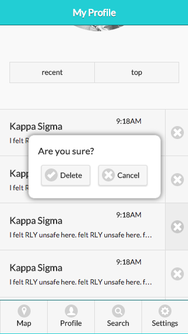
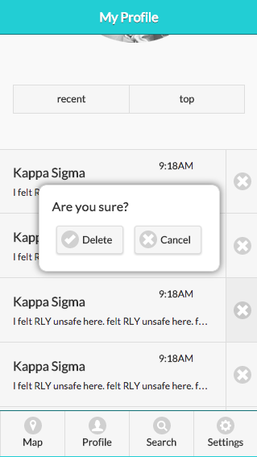

Safe Space
Associated with: CS220 Final ProjectGroup Project with Steffi Lee and Sasha Levy
Responsibilities:
- Coding (JavaScript, JQuery, HTML, CSS) the front end of the application
- Conducted user analysis and testing
Time Frame: Spring 2015
Project Brief
This was the final project for CS220, "Human Computer Interaction" at Wellesley College. This project required us to design, program, and test a mobile user interface for iOS. We used JavaScript, JQuery, CSS, and HTML to create a platform for sharing safety reviews and concerns of different off campus social settings around Boston.
Problem Statement
The increase in sexual assault on college campuses has raised awareness around unsafe spaces that get created at college parties. However, there is still no way of knowing whether a space is space or not before entering it. With this application, we are aiming to create a way to rank and comment on frats or social spaces around the Boston area that is accessible to Wellesley College students.
We used a user centered approach to design and code the application. As such, we first created user, task, and domain analysis to make sure that we always kept the user in mind. We then created multiple scnearios under which the application will be used and created two different low fidelity potential designs using Balsamiq Mockups:
Figure 1. First design option
Figure 2. Second design option
We then tested the designs on real users by using the low fidelity prototypes we had previously created.
Figure 3. Video of a user completing a task
After assessing what when well and what did not for the test users, we improved the application and coded it. We also paid special attention to the colors, icons, and the eight golden rules of HCI.
Final Product
Home-screen: This is the screen that users are greeted with when they have not logged in yet. Once they log in, they will never see this page again.
Map: Users can see their current location (the star) and the locations around them. By pressing on one of the locations once, a pop up will appear that ill show more details about it (photo #3) and by pressing on one of the locations twice, the user will get redirected to the location's profile (photo #4).

User's profile: They can access it through the navigation bar on the bottom of each page. It has your comments (ordered either by recent or top depending on which you choose) and a user can delete them by pressing on the "x" icon on the side of each comment. When a user takes that course of action, they are greeted by a pop up that will ask them if they are sure in order to reduce mistakes (photo #3).

 

Search: This is where a user can search for a location. They can also access this page through the navigation bar on the bottom of each page. They are able to see all the location pages available on the bottom (which are also buttons so if the user clicks one, they will be redirected to the particular location's page). Once a user starts typing in the search bar, only the correct location will appear below (photo #2).


Location Page: This is an example of what all location pages will look like. It is very similar to a user's profile page as to increase consistency and internal locus of control. Here, a user can look at the reviews a location has (either by recent or top) and can either like comments by clicking on the hearts next to each comment (not implemented yet at this phase) or post a comment (redirected to the pages in the next section).

Comment Page: This is where a user can write and post a comment. They can access this page only by first accessing a particular location and then pressing on the "Add a Comment" button (seen above, photo #2). They can write a comment and then press "Post". Then, they are prompted by a pop-up that asks them if they are sure in order to limit mistakes. After they re-affirm that they want to submit their comment, they are redirected to a page that confirms that their comments has been posted and a button that allows them to go and see it on the location's page.